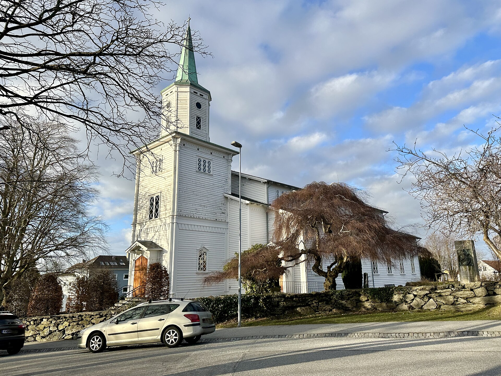
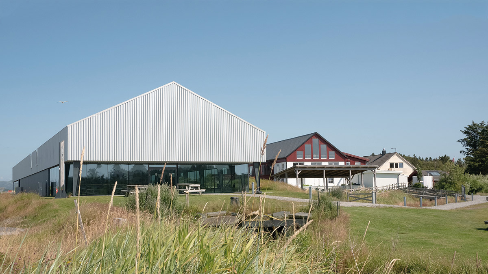
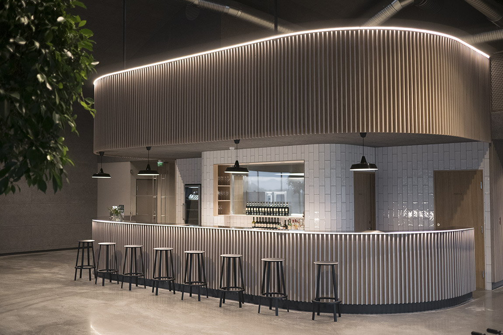

Foreløpig program
- 13:00 – Vielse
- 15:00 – Lokalet åpner for gjester, med aperitiff
- 16:00 – Brudeparet ankommer, deretter kake
- 18:00 – Middag
- 23:00 – Dansegulvet åpner
- 01:30 – Baren stenger
- 02:00 – Lokalet stenger
Vielsen – Vår Frue kirke
Vielsen holder vi i Vår Frue kirke (Hetlandskirken) i Stavanger, kl. 13:00.

Lokalet – Maskinhuset, Solastranden Gård

Festen finner sted i Maskinhuset på Solastranden Gård, vakkert beliggende ved sjøen på Sola, like utenfor Stavanger.
Maskinhuset er et moderne lokale med industriell eleganse – imponerende takhøyde, varme treelementer og fleksible soner. Lokalet har tre deler:
- Foajéen – innbydende mingleområde med egen bar, perfekt for velkomstdrinken.
- Hemsen – et lunt område med langbord over foajéen.
- Hovedsalen – hjertet i huset, med store flater og god takhøyde for middag og fest.

Solastranden Gård er kjent for å skreddersy menyen med fokus på kvalitet og lokale råvarer. Vi får hele huset for oss selv.